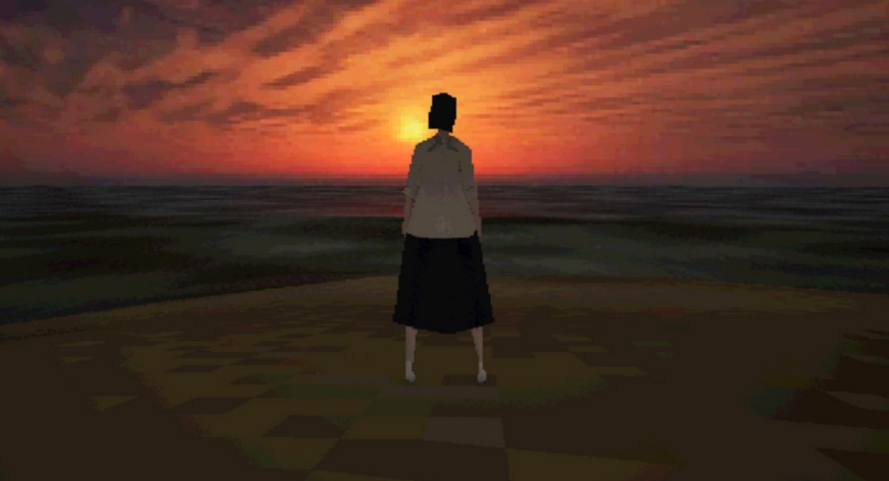
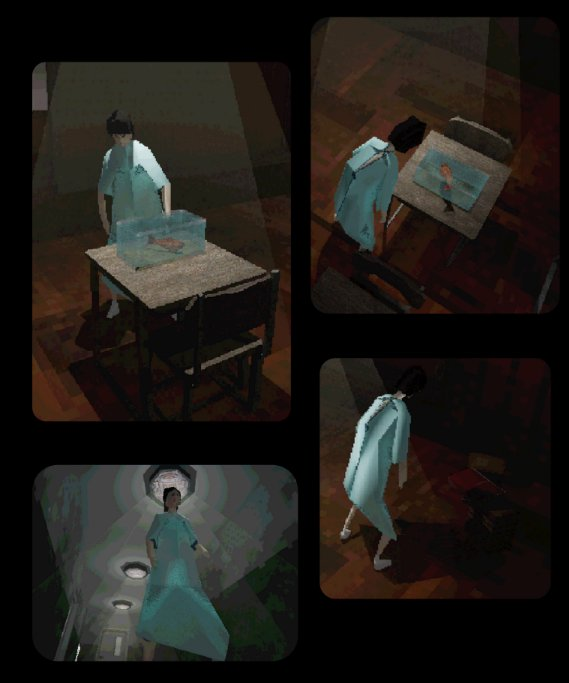
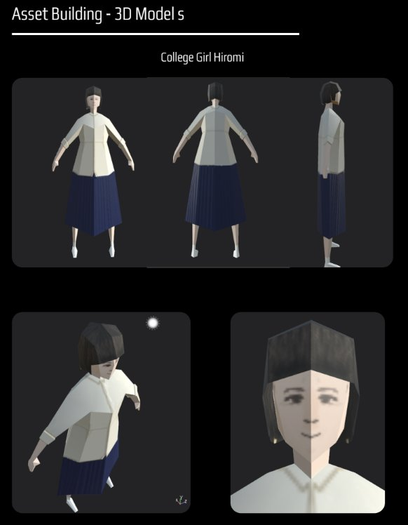
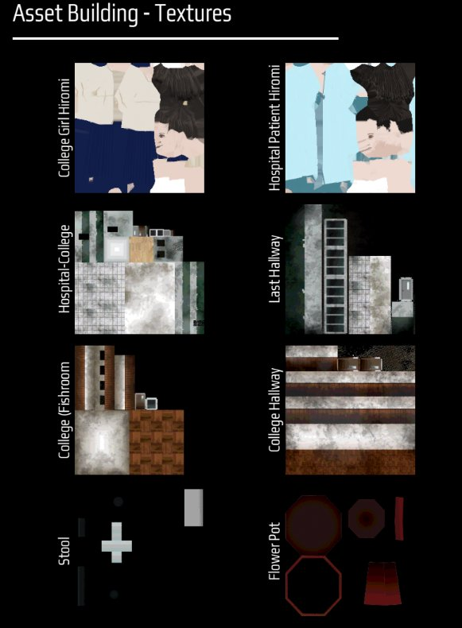
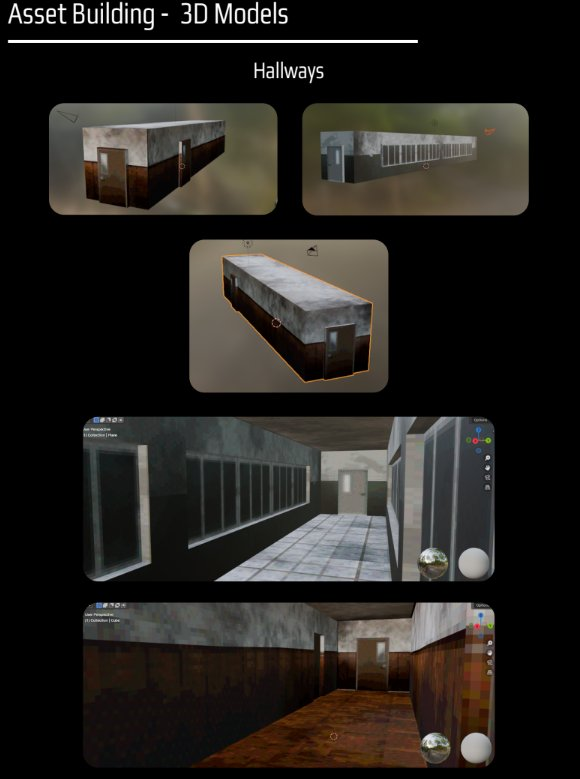
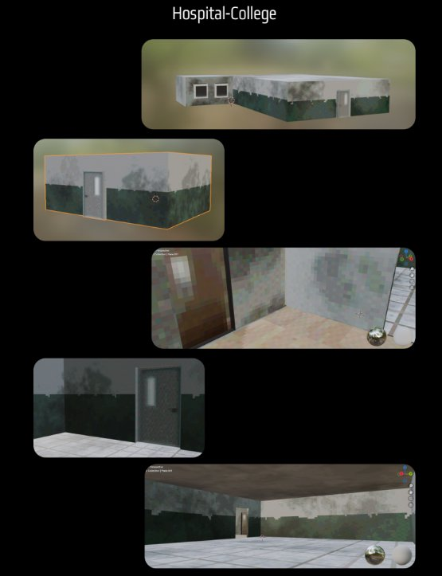

Low-Poly Character Variants
Modeled and textured protagonist variants in Blender—College Girl Hiromi and Hospital Patient Hiromi—preserving authentic retro PS1 low-poly silhouettes and narrative contrast.

3D Artist, Character & Environment Texturing
Blender, GIMP, Allegorithmic Substance Painter
Group See / Ukiyo
PS1-Inspired Psychological Narrative Game
Co-developed a PS1-inspired psychological narrative game (Group See / Ukiyo) following protagonist Hiromi across surreal transitioning spaces between a fisheries college campus and a hospital ward. Designed and textured low-poly character variants (College Girl Hiromi & Hospital Patient Hiromi), modular architectural hallways, and atmospheric lighting scenes in Blender.





Modeled and textured protagonist variants in Blender—College Girl Hiromi and Hospital Patient Hiromi—preserving authentic retro PS1 low-poly silhouettes and narrative contrast.
Built and textured Hospital-College rooms, modular hallways, College (Fishroom), Stool, and Flower Pot assets to stage surreal transitions across campus and ward spaces.
Authored weathered retro-3D surface textures using GIMP and Allegorithmic Substance Painter alongside volumetric lighting scenes in Blender.